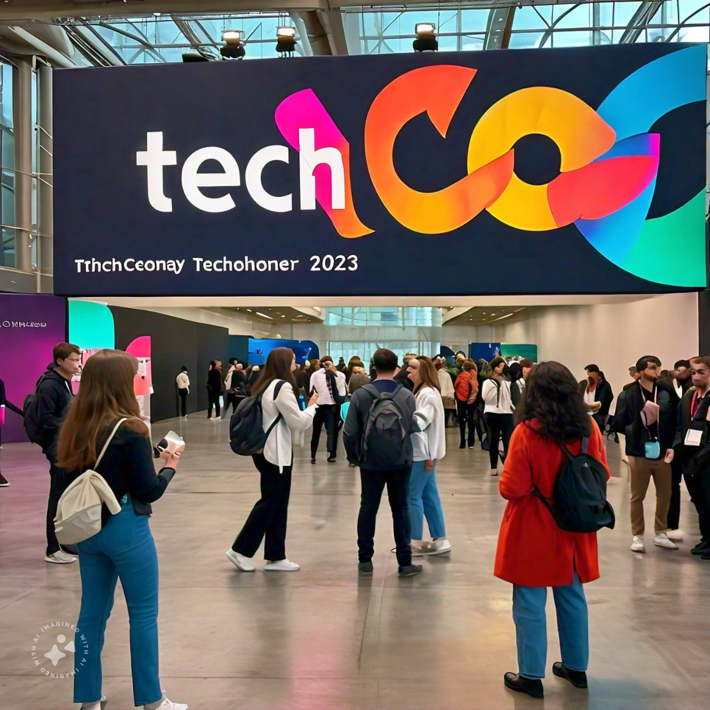

History
TechCon began in 2010 as a small gathering of tech enthusiasts. Over the years, it has grown into one of the largest technology conferences in the world, bringing together innovators, thought leaders, and professionals from all corners of the tech industry

From its humble beginnings, TechCon has continued to evolve, highlighting cutting-edge technologies and fostering a community of forward-thinking individuals.
Mission
Our mission is to inspire innovation, promote collaboration, and drive progress in the tech industry. We strive to create a platform where professionals can connect, learn, and lead the future of technology

Past Speakers
David Kuria
David Kuria, a tech entrepreneur and innovator, captivated the audience at TechCon 2020 with his insights on fostering innovation in startups. He is the founder of multiple successful tech ventures.
Jiao Wang
Jiao Wang, a blockchain pioneer, spoke at TechCon 2019 about the transformative potential of blockchain in financial systems. Her contributions have been instrumental in the development of decentralized applications.